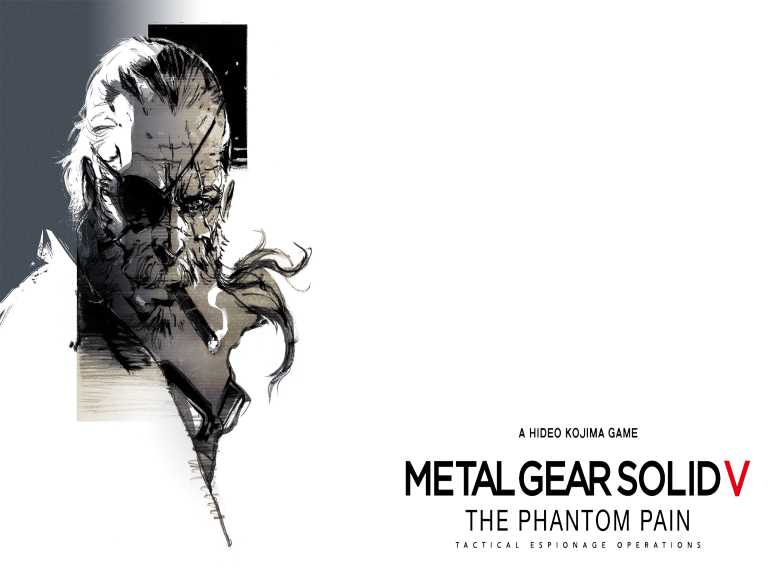
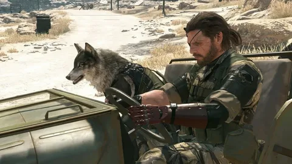
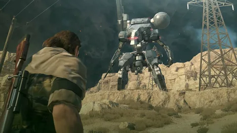
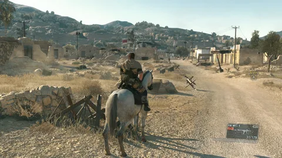
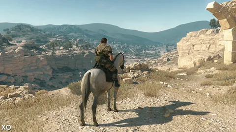
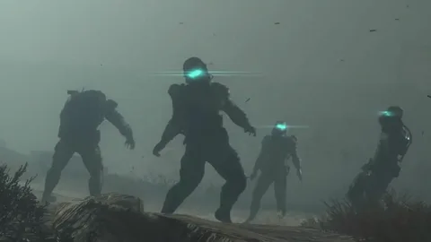
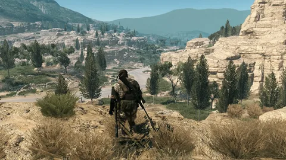

KojiFanSite
Главная
Игры
Кодзима
Авторы

Metal Gear Solid V:
The Phantom Pain
2015 · PS3, PS4, XBOX360, XBOXONE, PC
Metacritic - 91/100
Действие Metal Gear Solid V: The Phantom Pain происходит в 1984 году.
Главный герой Снейк после выхода из комы пытается создать новую армию наёмников взамен утраченной в Ground Zeroes и отомстить виновникам своего падения, ради чего участвует в тайных операциях в Афганистане времён советско-афганской войны и на анголо-заирской границе времён гражданской войны в Анголе.
Подобно предыдущим играм серии Metal Gear, The Phantom Pain требует от игрока перемещаться незаметно и избегать встреч с противниками, например, при скрытом проникновении на военные базы;
однако она является первой игрой в серии, в которой присутствует открытый мир — игрок может свободно перемещаться по обширной карте, самостоятельно выбирая задания, время и методы их выполнения.
  
Критики особенно высоко оценили геймплей игры, разнообразие игровых механик и предоставленную игроку свободу; некоторые издания, такие, как Famitsu, GameSpot и IGN, выставили игре наивысшую возможную оценку.
Запутанный сюжет игры вызвал смешанные отзывы: хотя ряд изданий высоко оценил его эмоциональную силу и раскрытие серьёзных «взрослых» тем, некоторые обозреватели сочли его скомканным и лишённым общего стержня, а саму игру не имеющей удовлетворительного финала.
Поздние этапы разработки игры были связаны с конфликтом между командой разработчиков во главе с Кодзимой и компанией-издателем Konami; в результате этого конфликта студия Kojima Productions была закрыта, а Кодзима покинул Konami.
  
@ Проект студентов из группы ИЭ-21
Быков Владислав, Чирин Юрий и Москаленко Дмитрий